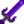
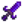
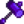

Galaxy Soul
Jump to navigation
Jump to search
| Galaxy Soul | |
| Forge 3 of these into a Galaxy weapon to unleash its final form. | |
| Information | |
| Source |
|
| Sell Price | |
The Galaxy Soul is an item used to upgrade Galaxy weapons in the Forge. Weapons forged using Galaxy Souls keep their enchantments and gem upgrades.
- Galaxy Souls can be purchased at Qi's Walnut Room for
 40.
40.
- After killing at least 50 Dangerous Monsters [1], Galaxy Souls can also be purchased from Island Trader on the last day of a season for
 Radioactive Bar (10).
Radioactive Bar (10).
- After killing at least 50 Dangerous Monsters [2], Galaxy Souls can also be acquired as an enemy drop in the "Dangerous" Mines unlocked by Mr. Qi's Danger in the Deep quest, or in the Skull Cavern during Mr. Qi's Skull Cavern Invasion.
- Semi-transparent Big Slimes containing a Galaxy Soul can be seen in the "Dangerous" Mines unlocked by Mr. Qi's Danger in the Deep quest, or in the Skull Cavern during Mr. Qi's Skull Cavern Invasion.[3] The Galaxy Soul is dropped upon killing the Big Slime.
Forge recipes
- See also: Forge
The Galaxy Soul is used in the Forge to upgrade a Galaxy Weapon into an Infinity Weapon. You have to upgrade a Galaxy Weapon 3 times, consuming 3 Galaxy Souls and 60 Cinder Shards in total.
| Image | Name | Description | Ingredients |
|---|---|---|---|
| Infinity Blade | The true form of the Galaxy Sword. |  Galaxy Sword (1) | |
| Infinity Dagger | The true form of the Galaxy Dagger. |  Galaxy Dagger (1) | |
| Infinity Gavel | The true form of the Galaxy Hammer. |  Galaxy Hammer (1) |
References
History
- 1.5: Introduced.